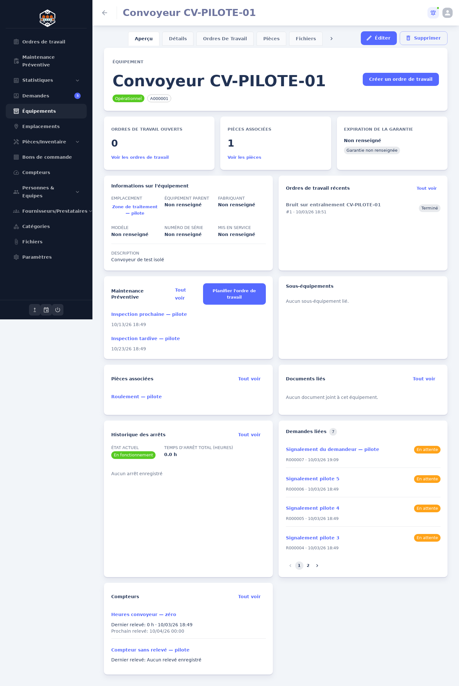
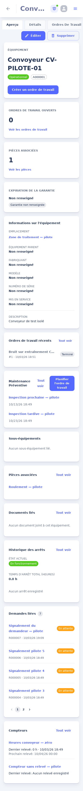

← PrototypesRÉFÉRENCE → ADAPTATION QPM
Comparaison des compositions
ÉCHANTILLONS FICTIFSLes captures QPM existantes sont montrées côte à côte avec le prototype correspondant. Pour Dribbble, les liens de recherche contiennent des descriptions et des pages publiques, mais aucun fichier image original fourni par l’utilisateur n’est présent dans le dépôt. Je ne substitue donc pas une image fictive à la référence : la structure documentée est expliquée et liée à sa source.
Fiche équipement · WEB-062–069 / MOB-030
Composition reprise depuis la capture QPM locale : navigation d’entité, carte d’identité et d’action, trois indicateurs équilibrés, puis panneaux opérationnels en deux colonnes.

Capture réelle fournie dans le dépôt. Les proportions observées sont reproduites en gardant les données de démonstration clairement identifiées.
Exécution d’un ordre · WEB-055 / MOB-002–003
La capture QPM actuelle présente le détail comme un tiroir sur la liste : titre/priorité, actions de statut et minuterie, onglets, puis métadonnées et tâches. Ce modèle est conservé sur le Web; sur mobile le détail devient une page dédiée pour une zone tactile utile.
Accueil mobile · MOB-001

Aucune capture locale de l’ancien dashboard mobile n’a été trouvée. Cette capture documente le shell et les contraintes actuelles de densité, pas l’accueil.
Référence externe à comparer : Field Service Mobile App. La description publique présente une organisation mobile des tâches/planning, mises à jour de WO et signature. Le prototype adapte l’ordre par échéance/priorité et les tâches terrain. La capture exacte Dribbble n’était pas fournie localement.
Planning préventif · WEB-047/048
La page présente un tableau de bord Facility Management qui centralise actifs, calendriers et équipes. La composition exacte du calendrier ne peut pas être certifiée par une image QPM fournie; la prévision et le registre d’appels ci-contre sont adaptés au modèle QPM, avec occurrence planifiée et WO généré explicitement distingués.
Liste WO · WEB-054
La source externe décrit une gestion de WO avec onglets d’état, recherche/filtres et actions de gestion. La file QPM conserve l’ordre « priorité, équipement, état, échéance » pour permettre le triage industriel.
Création WO · WEB-055 / MOB-005
Le flux publié met l’accent sur une saisie progressive, une décision à la fois. QPM conserve un formulaire unique mais regroupé par « Travail », « Équipement et lieu » et « Planification », avec aperçu sur desktop pour éviter un wizard et conserver l’accès rapide au formulaire existant.
Supervision dashboard · pattern Dribbble
La description publique de R1 documente une vue à trois colonnes équilibrées : statut des tâches de maintenance, incidents entrants et demandes de service; les éléments sont actionnables. Le prototype reprend ces trois piliers pour WO, incidents et requêtes, puis présente la file WO dense en écran dédié. C’est le pattern attesté; le fichier image original n’était pas joint au dépôt.
Lire les écarts et décisions de structure →